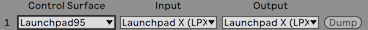
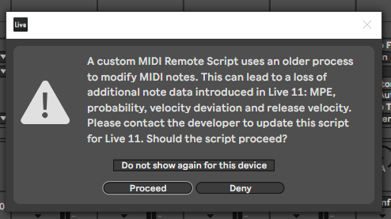

An improved Launchpad script for Ableton Live
Launchpad95 is a control surface script for the Novation Launchpads in Ableton Live. It started as a modified version of Live's own Launchpad scripts and keeps all they do, then adds a step sequencer to edit MIDI clips (one for drums, one melodic), an Instrument Controller with scales, a Device Controller and an improved Pro Session mode.
It needs no external tool such as Max for Live: it is a plain Live control surface script, written in Python. Free, GPL-3.0.
Live 11 or later. For Live 9 and 10, use the archived release. What changed in each version: the change log.
Installation
Supported hardware and software
Ableton Live 11 or later (Live 11 and 12; Mac or Windows; Intro, Standard or Suite). Launchpad95 now uses the note API that Live 11 introduced, so it no longer runs on Live 9 or 10: for those, download the archived Live 9/10 release.
Supported Launchpads:
- Launchpad (the original, MK1)
- Launchpad S
- Launchpad Mini
- Launchpad MK2 (RGB)
- Launchpad Mini MK2 (RGB)
- Launchpad Mini MK3 (RGB)
- Launchpad X (RGB)
Launchpad Pro: see Launchpad Pro95Launchpad Pro MK2is not supported
Setup
- Download Launchpad95.zip and unzip it.
- Copy the Launchpad95 folder into your Live User Library, in a folder named Remote Scripts (create it if needed). In Live's browser, right-click the User Library and choose Show in Finder / Show in Explorer to find it. The
.pyfiles must be directly insideUser Library/Remote Scripts/Launchpad95/.
- Plug in your Launchpad and start Live (restart it if it was running, Live reads the scripts at start).
- Open Settings (Preferences on older Lives) → Link, Tempo & MIDI. In a free Control Surface slot choose Launchpad95, and as Input and Output choose your Launchpad.

The Launchpad X and Mini MK3 show two ports each: choose the MIDI port for both Input and Output, LPX MIDI on the Launchpad X and LPMiniMK3 MIDI on the Mini MK3, not the DAW port.
- In the MIDI Ports list below, turn on Track, Sync and Remote for the Launchpad ports used by Launchpad95 (Track is needed for the note feedback of the Instrument Controller).

- Live Suite users: the
M4LDevicefolder holds an on-screen display, a Max for Live device that shows what you would see on a Push screen (see below).
User manual
Four modes are added on top of the existing modes: the Drum Step Sequencer to edit MIDI clips, a Melodic Step Sequencer, the Device Controller to edit any parameter of any instrument, effect or device on any track of your set, and finally an Instrument Mode providing a tighter integration with Live.
The pictures below show the Launchpad with its LEDs. Notes beside the scene buttons say what they do; hover a button for its description.
Instrument Controller mode
Instrument Mode replaces the classic User Mode 1. To activate the Instrument Controller, press the User Mode 1 button (the mode button stays amber). Press User Mode 1 once again: the button turns green, activating the Device Controller. If you enabled the plain User Mode 1 in Settings.py, pressing once more turns the button red and gives you that mode.
The top up/down navigation buttons navigate scenes, while the left/right buttons navigate tracks. The scene buttons control the currently selected track and clip: arm, solo, record, play, stop, etc. (see below).
The matrix of buttons acts as a MIDI keyboard, with a drum rack layout and a melodic mode. Melodic mode lets you select the root note, the type of scale (major, minor, etc.) and the octave you play in.
Most of the scene buttons have an alternate function when you hold them long (0.5 s):
- undo: a long press performs a redo!
- stop: a long press DELETES the selected clip. No worries, this is undoable!
- solo: a long press on solo enables/disables the selected track.
- arm: holding arm for more than 0.5 s toggles Live's metronome. A very long press (2 s) alternates between automatic arming of the track and manual track arming. The colour of the button reflects the selected mode. This is really useful if more than one controller or person plays with Live.
| prev scene | next scene | prev track | next track | Session mode | user 1 Inst. | user 2 step | mixer mode | |
enter scale edition mode scale |
||||||||
undo. long press to redo undo |
||||||||
| octave up | ||||||||
| octave down | ||||||||
start/stop selected clip. long press to delete start stop |
||||||||
lock to track lock |
||||||||
solo current track solo |
session record overdub |
Scale edition mode
To enter scale edition mode, press (and keep pressed) the 1st scene button in Instrument mode. Scales and their order are taken from Live itself. The selected key and scale are synchronized between the Launchpad and Live's clips.
| prev scene | next scene | prev track | next track | Session mode | user 1 Inst. | user 2 step | mixer mode | |
| absolute root | orient. | chromatic guitar | diatonic sequent | diatonic 3rd | diatonic 4th | chromatic | drumrack | enter scale edition mode scale |
| C# | D# | relative scale | F# | G# | A# | 5th left | quick scale mode | undo. long press to redo undo |
| C | D | E | F | G | A | B | 5th right | octave up |
| -2 | -1 | 0 | 1 | 2 | 3 | 4 | 5 | octave down |
| Major | Minor | Dorian | Mixolyd. | Lydian | Phrygian | Locrian | Diminish. | start/stop selected clip. long press to delete start stop |
| Whole-half | Whole Tone | Minor Blues | Minor Penta. | Major Penta. | Harmonic Minor | Melodic Minor | Super Locrian | lock to track lock |
| Bhairav | Hunga. Minor | Minor Gypsy | Hirojoshi | In-Sen | Iwato | Kumoi | Pelog | solo current track solo |
Spanish | IonEol | session record overdub |
- Orient.
- Changes the orientation of the instrument mode from vertical to horizontal.
- Absolute root
- The bottom left button is always the root note of the selected scale.
- Chromatic guitar
- Pretty much like the regular chromatic mode, except the top four rows are all shifted by one semitone, so that the bottom 6 rows emulate standard guitar tuning.
- Diatonic sequent
- Each row is an octave, so the first and last button of each row are the root note.
- Diatonic 3rd
- Moving from one button to the next one up moves a 3rd in the scale. 3rds are very practical to play chords vertically.
- Diatonic 4th
- Moving from one button to the next one up moves a 4th in the scale. 4th is the default mode, also on Push.
- Chromatic
- The button to the left or right of a button is a semitone lower or higher.
- C, C#, D, D#, E, F, F#, G, G#, A, A#, B
- Selects the root note of the scale.
- Relative scale
- Changes the selected scale to its relative scale, e.g. from C major to A minor and vice versa.
- 5th left
- Changes the selected scale to the previous one in the circle of fifths (a 5th lower).
- 5th right
- Changes the selected scale to the next one in the circle of fifths (a 5th higher).
- Quick scale mode
- Replaces the top 2 rows of the instrument mode with the quick scale modes (see below).
- -2, -1, 0, 1, 2, 3, 4, 5
- Changes the octave of the instrument mode.
Quick scale modes
If quick scale is on (the last button on the right of the 2nd row in scale edition mode), the two top rows of the Launchpad let you change the scale quickly. The pictures show those two rows. The last button of the first row switches between root note selection and mode selection.
Root note
In this mode you select the root note of your scale. Press the selected root again to alternate quickly between minor and major.
| C# | D# | relative scale | F# | G# | A# | 5th left | scale / mode toggle | enter scale edition mode scale |
| C | D | E | F | G | A | B | 5th right | undo. long press to redo undo |
Modes
In this mode you select the mode of your scale.
| Major | Minor | Dorian | Mixolyd. | Lydian | Phrygian | Locrian | scale / mode toggle | enter scale edition mode scale |
| Diminish. | Minor Blues | Harmonic Minor | Melodic Minor | Super Locrian | Hunga. Minor | Minor Gypsy | Spanish | undo. long press to redo undo |
Note repeat
In this mode you turn note repeat on and set it up.
| Swing +2.5% | Swing -2.5% | Swing 0% | Swing 25% | Swing 50% | Swing 75% | Repeat On/Off | Scale / mode toggle | enter scale edition mode scale |
| 1/4 | 1/4T | 1/8 | 1/8T | 1/16 | 1/16T | 1/32 | 1/32T | undo. long press to redo undo |
Drum step sequencer
To activate the Drum Step Sequencer, select a MIDI clip in the clip view, then press the User Mode 2 button once (normal mode). Pressing User Mode 2 once more opens the Melodic Step Sequencer.
This sequencer has two sub modes, detailed below: combined and multinote. (The second step sequencer, the melodic one, is described further down.)
A playback indicator scrolls through the grid in amber to show the playing position as the clip plays. It is only an overlay: it does not change what the buttons do.
Colour codes:
- Normal notes are green, brighter or dimmer with their velocity.
- Muted notes are red.
- Notes being played flash red.
- Notes being played outside the displayed block of the clip also flash red.
Other information is shown in orange:
- Note markers show which row is which note: the root note of the selected scale is marked with three orange buttons lit on the left; the other notes of the scale with one orange button lit on the left-most column.
- While you scroll left and right along the clip, a vertical bar shows where you are in the clip.
The pictures summarise the buttons; hover a button for its description.
The step sequencer starts in combined mode. The 4th scene button toggles between combined mode and multinote mode. Multinote mode works like the step sequencer of Launchpad85, while combined mode is closer to the step sequencer of Push.
Combined mode
The bottom left area selects the note being edited in the note editor at the top.
The bottom right area selects the part of the clip being displayed (a single press) and edited (a double press, or one button after the other).
Some buttons have combined functions:
- Lock (2nd scene button): press long to switch between clip lock and "play clip on locked track" mode.
- yellow: track lock mode. The step sequencer is locked to the current track and follows the playing clip on this track.
- red: the step sequencer is locked to the current clip.
- Quantize (3rd scene button): press long to duplicate the clip into a new clip.
- Mute (last scene button):
- hold mute and press a note to mute it
- hold mute and press a note in the bottom left quadrant to mute it
- hold mute and select a loop range in the loop selector to delete it
- Velocity (7th scene button):
- hold velocity and press a note to change its velocity
- hold velocity and press a note in the note selector to hear a preview of the sound
- hold velocity and select a loop range in the loop selector to extend the clip's content to the newly selected length
- Velocity and mute (7th and last scene buttons): hold both and select a loop range in the loop selector to mute that time selection.
| prev scene | next scene | prev track | next track | Session mode | user 1 device | cycle thru StepSequencers and User Mode 2 user 2 step |
mixer mode | |
Display Scale Selection Overlay scale |
||||||||
lock step seq to current clip (very useful !). long press to lock on current track only lock |
||||||||
cycle thru available quantisations. long press to duplicate clip and select new quant. |
||||||||
switches between combined and multinote modes modes |
||||||||
scroll up (notes) up |
||||||||
scroll down (notes) down |
||||||||
cycle thru velocities and velocity shift notes velocity |
hold and press a note in the matrix to (un)mute it. mutehold and press a note in the note selector to mute a lane hold+nav keys to scroll up/down one octave |
Multinote mode
To activate this mode, press the 4th scene button in combined mode (press it again to go back to combined mode).
This mode uses the grid as an 8 × 8 matrix, one MIDI note per row. It follows the selected scale. The left and right arrows move left and right in the clip.
select prev scene prev scene |
select next scene next scene |
select prev clip page prevpage |
select next clip page nextpage |
Session mode | user 1 device | cycle thru StepSequencers and User Mode 2 user 2 step |
mixer mode | |
Display Scale Selection Overlay scale |
||||||||
lock step seq to current clip (very useful !) lock |
||||||||
cycle thru available quantisations quant. |
||||||||
switches between combined and multinote modes modes |
||||||||
scroll up (notes) up |
||||||||
scroll down (notes) down |
||||||||
cycle thru velocities and velocity shift notes velocity |
hold and press a note in the matrix to (un)mute it. mutehold and press a note in the note selector to mute a lane hold+nav keys to scroll up/down one octave |
Melodic step sequencer
To activate this mode, press the User Mode 2 button until it turns green.
This mode behaves more like a hardware step sequencer. It uses the grid as a 7 × 8 matrix to edit note pitch, velocity, length and octave, one function per page. Of course, the pitches follow the selected scale!
The last row of the matrix selects the page and works like the loop selector of the combined step sequencer.
A double press on the last scene button toggles between monophonic and polyphonic modes.
NoteThe melodic step sequencer leaves alone the notes it cannot show: muted notes, notes outside the scale lanes or its 7 octaves, notes before the clip start and, in monophonic mode, extra notes on a step are kept as they are when you edit the clip.
select prev scene prev scene |
select next scene next scene |
prev track | next track | Session mode | user 1 device | cycle thru StepSequencers and User Moder 2 user 2 step |
mixer mode | |
Display Scale Selection Overlay scale |
||||||||
lock step seq to current clip (very useful !) lock |
||||||||
cycle thru available quantisations. quant. |
||||||||
randomise the selected function (pitch,length,velocity,octave) random ! |
||||||||
| length | ||||||||
| octave | ||||||||
| velocity | notes |
Device Controller mode
Navigation
Move among tracks and devices with the top left navigation buttons.
Editing parameters
You edit eight parameters of the selected device on the selected track at once, one parameter per column. Scene buttons 2 and 3 move through the banks of parameters. The Launchpad shows a parameter differently depending on its type.
- On/off parameters
- Shown in red. A single button changes the parameter.
- Parameters with a list of values
- Shown in amber, for example a synth waveform selector (square, sine, triangle). If the parameter has fewer than 8 values, each is directly available on its own button. If it has more, you scroll through the values: the closer the button to the centre, the finer the step; the closer to the top or bottom of the Launchpad, the bigger the change at each press.
- Parameters with continuous values
- Shown in green, for parameters like volume or panning. By default the Launchpad shows the parameter like a volume slider in mixer mode. If you turn on the precision slider mode (press scene button 4), the sliders work like the parameters with a list of values.
- Stepless sliders
- For parameters with continuous values, stepless sliders are on by default (
DEVICE_CONTROLLER__STEPLESS_MODEinSettings.py); a long press on scene button 4 turns them on or off. The harder you press a slider, the faster the value changes (hard enough, and it changes at once). The slides now advance with Live's own display updates, in steps of about a tenth of a second, at the same speed as before.
Locking to devices
You can save up to 4 devices on the 4 bottom scene buttons. When no device is saved, the button is pink. To save a device, select it, then hold one of the 4 last scene buttons for more than half a second: the button turns red, your device is saved. Recall it at any time with a short press on that scene button. To unsave a device, hold the button long again.
| device+ | device- | track- | track+ | session mode | user 1 device | cycle thru StepSequencers and User Moder 2 user 2 step |
mixer mode | |
| on/off | ||||||||
| bank+ | ||||||||
| bank- | ||||||||
| precision stepless | ||||||||
| lock1 | ||||||||
| lock2 | ||||||||
| lock3 | lock4 |
Session mode
| scenes up | scenes down | tracks left | tracks right | Session mode | user 1 Inst. | user 2 step | mixer mode | |
| scene | ||||||||
| scene | ||||||||
| scene | ||||||||
| scene | ||||||||
| scene | ||||||||
| scene | ||||||||
| scene | ||||||||
| scene |
Pro Session mode
This mode adds functions to the classic Session mode. To activate Pro Session mode, press and release the Session button (the mode button stays amber). Repeat to go back to the normal Session mode.
The navigation buttons move the session box (note that it has only 7 rows). The scene buttons perform several functions, shown below.
| prev scene | next scene | prev track | next track | Session mode | user 1 Inst. | user 2 step | mixer mode | |
- Long press: redo. Undo |
||||||||
|
- also act as Shift Button
Shift Sel LaunQ
- Double click: hide detail view - Shift + Matrix: select clip and show details - Shift + Last Row: clip launch quantization |
||||||||
|
- Double click: Metronome ON/OFF
BPM CpyPst
- Tempo + Matrix: Fold/Unfold track - Shift + Tempo + Matrix: Launch scene - Tempo + Last Row: Tempo |
||||||||
|
- Double click: Record Quantization ON/OFF
Quant. RecQ
- Quantize + Matrix: Quantizes clip - Shift + Quantize + Matrix: Create new Scene - Quantize + Last Row: record quantizatin |
||||||||
|
- Double click: Unsolo all tracks
Double FixLen
- Duplicate + Matrix: Duplicate clip - Shift + Duplicate + Matrix: Duplicate Scene - Duplicate + Last Row: Solo Track |
||||||||
|
- Double click: Unmute all tracks
Delete Mute
- Delete + Matrix: Delete clip - Shift + Delete + Matrix: Delete Scene - Delete + Last Row: Mute Track |
||||||||
|
- Double click: Unsolo all tracks
Duplic. Solo
- Duplicate + Matrix: Duplicate clip - Shift + Duplicate + Matrix: Duplicate Scene - Duplicate + Last Row: Solo Track |
||||||||
|
Shift + Record: Single/Multi Record mode
Record ArmSingle Record - Single click: Session Record ON/OFF - Record + Matrix: Arm track and launch clip (Record/Overdub clip) - Record + Last Row: Arm Track Multi Record - Single click: Jump to the next available clip slot and start recording for each armed track - Matrix Button: Arm clip track and launch clip (Record/Overdub clip) - Record + Last Row: Arm Track |
Below is the last matrix row for each of the modes.
Launch and record quantization, and fixed clip length recording
| on/off | decrease | increase | value1 | value2 | value3 | value4 | value5 | Record Arm |
Metronome and tempo
| on/off | nudge left | nudge right | -5 | -1 | +1 | +5 | tap | Record Arm |
Mute, solo, arm
| arm mute solo | arm mute solo | arm mute solo | arm mute solo | arm mute solo | Record Arm |
User 1 and User 2 modes
The plain User 1 and User 2 modes are disabled by default. Enable them again by editing USER_MODES_1 and USER_MODES_2 in Settings.py.
User 1 mode
| Session mode | user 1 Inst. | user 2 step | mixer mode | |||||
User 2 mode
| Session mode | user 1 Inst. | user 2 step | mixer mode | |||||
Mixer mode
Volume
To change the levels of the volume slider buttons, set VOLUME_LEVELS in Settings.py.
| prev scene | next scene | prev track | next track | Session mode | user 1 Inst. | user 2 step | mixer mode | |
| Volume | ||||||||
| Pan | ||||||||
| Send A | ||||||||
| Send B | ||||||||
| Stop All | ||||||||
| Active all | ||||||||
| Unsolo ll | ||||||||
| Unarm All |
Max for Live on-screen display / helper
Launchpad95 comes with a Max for Live device that shows useful information about the selected tracks, clips and other parameters. Make sure to try it!

It is in Launchpad95/M4LDevice/Launchpad95OSDHelper.amxd.
F.A.Q.
- 1. Which Launchpads are supported?
- Launchpad, Launchpad S, Mini, Mini MK2 and MK2 (RGB), Mini MK3 and Launchpad X: basically every Launchpad but the Pro. The Launchpad Pro is supported by Launchpad Pro95.
- 2. Which Ableton Live versions are supported?
- Live 11 and later, Mac or Windows, Intro, Standard or Suite. Live 9.2 to 10 are served by the archived Live 9/10 release, which no longer changes.
From time to time Ableton changes Live's Python API without notice, and Launchpad95 may stop working. If it stopped working after a Live update, download the latest version, and if that does not help, open an issue. - 3. Where should I put the script?
- In Live's browser, go to your User Library and create a folder Remote Scripts. Right-click this folder and select Show in Finder / Show in Explorer. Copy the Launchpad95 folder there.
- 4. Where should I put the script for Live 9 (archived release)?
-
Live 9 installs the script inside the Live application
On Windows: inside
C:\ProgramData\Ableton\Live 9 Suite\Resources\MIDI Remote Scripts.
On a Mac, right-click the Live application you use (there may be more than one installed!) and select Show Package Contents, then browse toApp-Resources/MIDI Remote Scripts.Inside this
MIDI Remote Scriptsfolder you should have a folder calledLaunchpad95, holding a bunch of.pyfiles, and for each of them a.pycfile (the compiled version that Live makes as it starts).Sometimes a picture is worth 1000 words. On a Mac it looks like this:

On a PC like that:

- 5. I installed everything, but the Launchpad does not light up when I select Launchpad95 in Live's settings. What is wrong?
- It is hard to guess what went wrong; the install is probably not quite right. Try installing from scratch: download, unzip, copy, restart Live. Things to check:
- that you installed it in the right place (see question 3);
- the folder name AND its full path (again, see the picture in question 3);
- how many versions of Live you have installed;
- that you run Live 11 or later (for Live 9.2 and 10, the archived release; for Live 8, Launchpad85, no longer maintained);
- on a Launchpad X or Mini MK3, that Input and Output are the MIDI port, not the DAW port (see Setup).
- 6. I installed everything, but Launchpad95 does not appear in the Control Surface list. What is wrong?
- See question 5.
- 7. Note feedback does not work in the Instrument Controller
- Make sure the Launchpad MIDI input and output have Track turned on in Live's MIDI settings.
- 8. Live 8?
- Live 8.4 had its own version, Launchpad85, which is no longer maintained.
Known issues
- Older versions on Live 11 and later make Live show this warning about Launchpad95:

It concerns only the step sequencers, which used Live's older note functions: editing a clip with them lost MPE, probability, velocity deviation and release velocity. The current version uses the note functions of Live 11 and keeps probability, velocity deviation and release velocity when it rewrites a note. If you still use an older version and do not use the step sequencers, you can ignore the warning.
- Archived Live 9 release: in Live 9, moving notes in the clip editor while the step sequencer is open duplicates notes.
- Launchpad85, for Live 8, is no longer maintained.
Changes
What changed in each version, from the first public version in 2011 to now: the change log.
Recent changes: the step sequencers use Live 11's note API, many bug fixes, the device controller runs on Live's main thread, and an automated test suite. The script now needs Live 11 or later.
Credits
Launchpad95 is by w0ts, based on Ableton's Launchpad scripts, with contributions from Daniel Erceg, Pablo Torres (Poltow, Launchpad97: Pro Session mode and note repeat), Thomas Frössman, MrMatch246 (stepless faders, clip scales) and others. GPL-3.0.
Not affiliated with Novation or Ableton. Launchpad is a trademark of Focusrite Audio Engineering; Ableton Live is a trademark of Ableton AG.